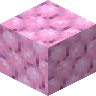

草莓冰激凌块
Strawberry Ice Cream Block
英文名: Strawberry Ice Cream Block命名空间 ID:
neapolitan:strawberry_ice_cream_block类型: 方块所属模组: Neapolitan资料检索: 🔎 在 MC百科 搜索「草莓冰激凌块」合成获得 (1)
有序合成Neapolitan
原始 JSON
{
"type": "minecraft:crafting_shaped",
"category": "misc",
"key": {
"#": {
"item": "minecraft:snow_block"
},
"X": {
"item": "neapolitan:strawberry_ice_cream"
}
},
"pattern": [
"###",
"#X#",
"###"
],
"result": {
"count": 8,
"id": "neapolitan:strawberry_ice_cream_block"
}
}